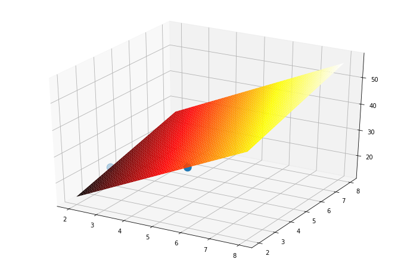

迴歸：Scikit-Learn 與矩陣求解的比較¶
from sklearn import datasets
ds= datasets.load_boston()
print(ds.DESCR)
.. _boston_dataset:
Boston house prices dataset
---------------------------
**Data Set Characteristics:**
:Number of Instances: 506
:Number of Attributes: 13 numeric/categorical predictive. Median Value (attribute 14) is usually the target.
:Attribute Information (in order):
- CRIM per capita crime rate by town
- ZN proportion of residential land zoned for lots over 25,000 sq.ft.
- INDUS proportion of non-retail business acres per town
- CHAS Charles River dummy variable (= 1 if tract bounds river; 0 otherwise)
- NOX nitric oxides concentration (parts per 10 million)
- RM average number of rooms per dwelling
- AGE proportion of owner-occupied units built prior to 1940
- DIS weighted distances to five Boston employment centres
- RAD index of accessibility to radial highways
- TAX full-value property-tax rate per $10,000
- PTRATIO pupil-teacher ratio by town
- B 1000(Bk - 0.63)^2 where Bk is the proportion of blacks by town
- LSTAT % lower status of the population
- MEDV Median value of owner-occupied homes in $1000's
:Missing Attribute Values: None
:Creator: Harrison, D. and Rubinfeld, D.L.
This is a copy of UCI ML housing dataset.
https://archive.ics.uci.edu/ml/machine-learning-databases/housing/
This dataset was taken from the StatLib library which is maintained at Carnegie Mellon University.
The Boston house-price data of Harrison, D. and Rubinfeld, D.L. 'Hedonic
prices and the demand for clean air', J. Environ. Economics & Management,
vol.5, 81-102, 1978. Used in Belsley, Kuh & Welsch, 'Regression diagnostics
...', Wiley, 1980. N.B. Various transformations are used in the table on
pages 244-261 of the latter.
The Boston house-price data has been used in many machine learning papers that address regression
problems.
.. topic:: References
- Belsley, Kuh & Welsch, 'Regression diagnostics: Identifying Influential Data and Sources of Collinearity', Wiley, 1980. 244-261.
- Quinlan,R. (1993). Combining Instance-Based and Model-Based Learning. In Proceedings on the Tenth International Conference of Machine Learning, 236-243, University of Massachusetts, Amherst. Morgan Kaufmann.
import pandas as pd
X = pd.DataFrame(ds.data, columns=ds.feature_names)
y = ds.target
X.head(10)
| CRIM | ZN | INDUS | CHAS | NOX | RM | AGE | DIS | RAD | TAX | PTRATIO | B | LSTAT | |
|---|---|---|---|---|---|---|---|---|---|---|---|---|---|
| 0 | 0.00632 | 18.0 | 2.31 | 0.0 | 0.538 | 6.575 | 65.2 | 4.0900 | 1.0 | 296.0 | 15.3 | 396.90 | 4.98 |
| 1 | 0.02731 | 0.0 | 7.07 | 0.0 | 0.469 | 6.421 | 78.9 | 4.9671 | 2.0 | 242.0 | 17.8 | 396.90 | 9.14 |
| 2 | 0.02729 | 0.0 | 7.07 | 0.0 | 0.469 | 7.185 | 61.1 | 4.9671 | 2.0 | 242.0 | 17.8 | 392.83 | 4.03 |
| 3 | 0.03237 | 0.0 | 2.18 | 0.0 | 0.458 | 6.998 | 45.8 | 6.0622 | 3.0 | 222.0 | 18.7 | 394.63 | 2.94 |
| 4 | 0.06905 | 0.0 | 2.18 | 0.0 | 0.458 | 7.147 | 54.2 | 6.0622 | 3.0 | 222.0 | 18.7 | 396.90 | 5.33 |
| 5 | 0.02985 | 0.0 | 2.18 | 0.0 | 0.458 | 6.430 | 58.7 | 6.0622 | 3.0 | 222.0 | 18.7 | 394.12 | 5.21 |
| 6 | 0.08829 | 12.5 | 7.87 | 0.0 | 0.524 | 6.012 | 66.6 | 5.5605 | 5.0 | 311.0 | 15.2 | 395.60 | 12.43 |
| 7 | 0.14455 | 12.5 | 7.87 | 0.0 | 0.524 | 6.172 | 96.1 | 5.9505 | 5.0 | 311.0 | 15.2 | 396.90 | 19.15 |
| 8 | 0.21124 | 12.5 | 7.87 | 0.0 | 0.524 | 5.631 | 100.0 | 6.0821 | 5.0 | 311.0 | 15.2 | 386.63 | 29.93 |
| 9 | 0.17004 | 12.5 | 7.87 | 0.0 | 0.524 | 6.004 | 85.9 | 6.5921 | 5.0 | 311.0 | 15.2 | 386.71 | 17.10 |
y
array([24. , 21.6, 34.7, 33.4, 36.2, 28.7, 22.9, 27.1, 16.5, 18.9, 15. ,
18.9, 21.7, 20.4, 18.2, 19.9, 23.1, 17.5, 20.2, 18.2, 13.6, 19.6,
15.2, 14.5, 15.6, 13.9, 16.6, 14.8, 18.4, 21. , 12.7, 14.5, 13.2,
13.1, 13.5, 18.9, 20. , 21. , 24.7, 30.8, 34.9, 26.6, 25.3, 24.7,
21.2, 19.3, 20. , 16.6, 14.4, 19.4, 19.7, 20.5, 25. , 23.4, 18.9,
35.4, 24.7, 31.6, 23.3, 19.6, 18.7, 16. , 22.2, 25. , 33. , 23.5,
19.4, 22. , 17.4, 20.9, 24.2, 21.7, 22.8, 23.4, 24.1, 21.4, 20. ,
20.8, 21.2, 20.3, 28. , 23.9, 24.8, 22.9, 23.9, 26.6, 22.5, 22.2,
23.6, 28.7, 22.6, 22. , 22.9, 25. , 20.6, 28.4, 21.4, 38.7, 43.8,
33.2, 27.5, 26.5, 18.6, 19.3, 20.1, 19.5, 19.5, 20.4, 19.8, 19.4,
21.7, 22.8, 18.8, 18.7, 18.5, 18.3, 21.2, 19.2, 20.4, 19.3, 22. ,
20.3, 20.5, 17.3, 18.8, 21.4, 15.7, 16.2, 18. , 14.3, 19.2, 19.6,
23. , 18.4, 15.6, 18.1, 17.4, 17.1, 13.3, 17.8, 14. , 14.4, 13.4,
15.6, 11.8, 13.8, 15.6, 14.6, 17.8, 15.4, 21.5, 19.6, 15.3, 19.4,
17. , 15.6, 13.1, 41.3, 24.3, 23.3, 27. , 50. , 50. , 50. , 22.7,
25. , 50. , 23.8, 23.8, 22.3, 17.4, 19.1, 23.1, 23.6, 22.6, 29.4,
23.2, 24.6, 29.9, 37.2, 39.8, 36.2, 37.9, 32.5, 26.4, 29.6, 50. ,
32. , 29.8, 34.9, 37. , 30.5, 36.4, 31.1, 29.1, 50. , 33.3, 30.3,
34.6, 34.9, 32.9, 24.1, 42.3, 48.5, 50. , 22.6, 24.4, 22.5, 24.4,
20. , 21.7, 19.3, 22.4, 28.1, 23.7, 25. , 23.3, 28.7, 21.5, 23. ,
26.7, 21.7, 27.5, 30.1, 44.8, 50. , 37.6, 31.6, 46.7, 31.5, 24.3,
31.7, 41.7, 48.3, 29. , 24. , 25.1, 31.5, 23.7, 23.3, 22. , 20.1,
22.2, 23.7, 17.6, 18.5, 24.3, 20.5, 24.5, 26.2, 24.4, 24.8, 29.6,
42.8, 21.9, 20.9, 44. , 50. , 36. , 30.1, 33.8, 43.1, 48.8, 31. ,
36.5, 22.8, 30.7, 50. , 43.5, 20.7, 21.1, 25.2, 24.4, 35.2, 32.4,
32. , 33.2, 33.1, 29.1, 35.1, 45.4, 35.4, 46. , 50. , 32.2, 22. ,
20.1, 23.2, 22.3, 24.8, 28.5, 37.3, 27.9, 23.9, 21.7, 28.6, 27.1,
20.3, 22.5, 29. , 24.8, 22. , 26.4, 33.1, 36.1, 28.4, 33.4, 28.2,
22.8, 20.3, 16.1, 22.1, 19.4, 21.6, 23.8, 16.2, 17.8, 19.8, 23.1,
21. , 23.8, 23.1, 20.4, 18.5, 25. , 24.6, 23. , 22.2, 19.3, 22.6,
19.8, 17.1, 19.4, 22.2, 20.7, 21.1, 19.5, 18.5, 20.6, 19. , 18.7,
32.7, 16.5, 23.9, 31.2, 17.5, 17.2, 23.1, 24.5, 26.6, 22.9, 24.1,
18.6, 30.1, 18.2, 20.6, 17.8, 21.7, 22.7, 22.6, 25. , 19.9, 20.8,
16.8, 21.9, 27.5, 21.9, 23.1, 50. , 50. , 50. , 50. , 50. , 13.8,
13.8, 15. , 13.9, 13.3, 13.1, 10.2, 10.4, 10.9, 11.3, 12.3, 8.8,
7.2, 10.5, 7.4, 10.2, 11.5, 15.1, 23.2, 9.7, 13.8, 12.7, 13.1,
12.5, 8.5, 5. , 6.3, 5.6, 7.2, 12.1, 8.3, 8.5, 5. , 11.9,
27.9, 17.2, 27.5, 15. , 17.2, 17.9, 16.3, 7. , 7.2, 7.5, 10.4,
8.8, 8.4, 16.7, 14.2, 20.8, 13.4, 11.7, 8.3, 10.2, 10.9, 11. ,
9.5, 14.5, 14.1, 16.1, 14.3, 11.7, 13.4, 9.6, 8.7, 8.4, 12.8,
10.5, 17.1, 18.4, 15.4, 10.8, 11.8, 14.9, 12.6, 14.1, 13. , 13.4,
15.2, 16.1, 17.8, 14.9, 14.1, 12.7, 13.5, 14.9, 20. , 16.4, 17.7,
19.5, 20.2, 21.4, 19.9, 19. , 19.1, 19.1, 20.1, 19.9, 19.6, 23.2,
29.8, 13.8, 13.3, 16.7, 12. , 14.6, 21.4, 23. , 23.7, 25. , 21.8,
20.6, 21.2, 19.1, 20.6, 15.2, 7. , 8.1, 13.6, 20.1, 21.8, 24.5,
23.1, 19.7, 18.3, 21.2, 17.5, 16.8, 22.4, 20.6, 23.9, 22. , 11.9])
X.info()
<class 'pandas.core.frame.DataFrame'>
RangeIndex: 506 entries, 0 to 505
Data columns (total 13 columns):
# Column Non-Null Count Dtype
--- ------ -------------- -----
0 CRIM 506 non-null float64
1 ZN 506 non-null float64
2 INDUS 506 non-null float64
3 CHAS 506 non-null float64
4 NOX 506 non-null float64
5 RM 506 non-null float64
6 AGE 506 non-null float64
7 DIS 506 non-null float64
8 RAD 506 non-null float64
9 TAX 506 non-null float64
10 PTRATIO 506 non-null float64
11 B 506 non-null float64
12 LSTAT 506 non-null float64
dtypes: float64(13)
memory usage: 51.5 KB
import numpy as np
X.AGE.astype(np.float32)
0 65.199997
1 78.900002
2 61.099998
3 45.799999
4 54.200001
...
501 69.099998
502 76.699997
503 91.000000
504 89.300003
505 80.800003
Name: AGE, Length: 506, dtype: float32
X.isnull().sum()
CRIM 0
ZN 0
INDUS 0
CHAS 0
NOX 0
RM 0
AGE 0
DIS 0
RAD 0
TAX 0
PTRATIO 0
B 0
LSTAT 0
dtype: int64
X.isnull().sum().sum()
0
from sklearn.model_selection import train_test_split
X_train, X_test, y_train, y_test = train_test_split(X, y, test_size = 0.2)
from sklearn.preprocessing import StandardScaler
scaler = StandardScaler()
X_train = scaler.fit_transform(X_train)
X_test = scaler.transform(X_test)
X_train.shape, X_test.shape
((404, 13), (102, 13))
from sklearn.linear_model import LinearRegression
lr = LinearRegression()
lr.fit(X_train, y_train)
LinearRegression()
lr.coef_
array([-0.47203099, 1.0758604 , -0.02008315, 0.93648448, -1.55000644,
2.63442578, 0.17452955, -2.84030514, 2.50991321, -2.11501675,
-1.85542616, 1.13431823, -4.11867231])
lr.intercept_
22.452475247524802
lr.score(X_test, y_test)
0.6634661724735491
from sklearn.metrics import mean_squared_error
mean_squared_error(y_test, lr.predict(X_test))
27.77075462726067
mean_squared_error(y_test, lr.predict(X_test)) ** .5
5.269796450268328
from sklearn.metrics import r2_score
r2_score(y_test, lr.predict(X_test))
0.6634661724735491
二次迴歸¶
from sklearn.preprocessing import PolynomialFeatures
poly = PolynomialFeatures(2)
X2 = poly.fit_transform(X)
from sklearn.model_selection import train_test_split
X_train, X_test, y_train, y_test = train_test_split(X2, y, test_size = 0.2)
from sklearn.preprocessing import StandardScaler
scaler = StandardScaler()
X_train = scaler.fit_transform(X_train)
X_test = scaler.transform(X_test)
X_train.shape, X_test.shape
((404, 105), (102, 105))
from sklearn.linear_model import LinearRegression
lr = LinearRegression()
lr.fit(X_train, y_train)
LinearRegression()
lr.score(X_test, y_test)
0.8631832916391332
len(lr.coef_)
105
簡單運算¶
import numpy as np
A = np.array([[2,4],
[6,2]])
B = np.array([[18],
[34]])
C = np.linalg.solve(A, B)
print(C)
[[5.]
[2.]]
np.linalg.inv(A) @ B
array([[5.],
[2.]])
np.linalg.inv(A.T @ A) @ A.T @ B
array([[5.],
[2.]])
from mpl_toolkits import mplot3d
import numpy as np
import matplotlib.pyplot as plt
fig = plt.figure(figsize=(12, 8))
ax = plt.axes(projection="3d")
X=A
y=B
X1=X[:, 0].reshape(X.shape[0])
X2=X[:, 1].reshape(X.shape[0])
ax.scatter3D(X1, X2, y, cmap='hsv', marker= 'o', s = [160,160])
X1=np.linspace(2,8,50)
X2=np.linspace(2,8,50)
x_surf, y_surf = np.meshgrid(X1, X2)
z_surf= x_surf *5 + y_surf * 2
from matplotlib import cm
ax.plot_surface(x_surf, y_surf, z_surf, cmap=cm.hot) # plot a 3d surface plot
plt.show()

Boston by matrix¶
from sklearn import datasets
ds= datasets.load_boston()
import pandas as pd
X = pd.DataFrame(ds.data, columns=ds.feature_names)
y = ds.target
X.head(10)
| CRIM | ZN | INDUS | CHAS | NOX | RM | AGE | DIS | RAD | TAX | PTRATIO | B | LSTAT | |
|---|---|---|---|---|---|---|---|---|---|---|---|---|---|
| 0 | 0.00632 | 18.0 | 2.31 | 0.0 | 0.538 | 6.575 | 65.2 | 4.0900 | 1.0 | 296.0 | 15.3 | 396.90 | 4.98 |
| 1 | 0.02731 | 0.0 | 7.07 | 0.0 | 0.469 | 6.421 | 78.9 | 4.9671 | 2.0 | 242.0 | 17.8 | 396.90 | 9.14 |
| 2 | 0.02729 | 0.0 | 7.07 | 0.0 | 0.469 | 7.185 | 61.1 | 4.9671 | 2.0 | 242.0 | 17.8 | 392.83 | 4.03 |
| 3 | 0.03237 | 0.0 | 2.18 | 0.0 | 0.458 | 6.998 | 45.8 | 6.0622 | 3.0 | 222.0 | 18.7 | 394.63 | 2.94 |
| 4 | 0.06905 | 0.0 | 2.18 | 0.0 | 0.458 | 7.147 | 54.2 | 6.0622 | 3.0 | 222.0 | 18.7 | 396.90 | 5.33 |
| 5 | 0.02985 | 0.0 | 2.18 | 0.0 | 0.458 | 6.430 | 58.7 | 6.0622 | 3.0 | 222.0 | 18.7 | 394.12 | 5.21 |
| 6 | 0.08829 | 12.5 | 7.87 | 0.0 | 0.524 | 6.012 | 66.6 | 5.5605 | 5.0 | 311.0 | 15.2 | 395.60 | 12.43 |
| 7 | 0.14455 | 12.5 | 7.87 | 0.0 | 0.524 | 6.172 | 96.1 | 5.9505 | 5.0 | 311.0 | 15.2 | 396.90 | 19.15 |
| 8 | 0.21124 | 12.5 | 7.87 | 0.0 | 0.524 | 5.631 | 100.0 | 6.0821 | 5.0 | 311.0 | 15.2 | 386.63 | 29.93 |
| 9 | 0.17004 | 12.5 | 7.87 | 0.0 | 0.524 | 6.004 | 85.9 | 6.5921 | 5.0 | 311.0 | 15.2 | 386.71 | 17.10 |
from sklearn.model_selection import train_test_split
X_train, X_test, y_train, y_test = train_test_split(X, y, test_size = 0.2)
b=np.ones((X_train.shape[0], 1))
b.shape
(404, 1)
X_train=np.hstack((X_train, b))
# np.linalg.inv(A.T @ A) @ A.T @ B
W = np.linalg.inv(X_train.T @ X_train) @ X_train.T @ y_train
W
array([-8.88275642e-02, 4.02073843e-02, -6.33260182e-03, 3.10795581e+00,
-1.52570723e+01, 4.00837251e+00, -1.02513716e-02, -1.47928723e+00,
2.64648179e-01, -1.22285584e-02, -9.16861715e-01, 7.15857131e-03,
-5.21315607e-01, 3.51904141e+01])
X_test.shape, W.shape, y_test.shape
((102, 13), (14,), (102,))
b=np.ones((X_test.shape[0], 1))
b.shape
(102, 1)
X_test=np.hstack((X_test, b))
SSE = ((X_test @ W - y_test ) ** 2).sum()
MSE = SSE / y_test.shape[0]
MSE
27.70000181614502
RMSE = MSE ** (1/2)
RMSE
5.2630791193126685
R^2 公式¶
https://scikit-learn.org/stable/modules/model_evaluation.html#r2-score
y_mean = y_test.ravel().mean()
SST = ((y_test - y_mean) ** 2).sum()
R2 = 1 - (SSE / SST)
R2
0.6651148600879533